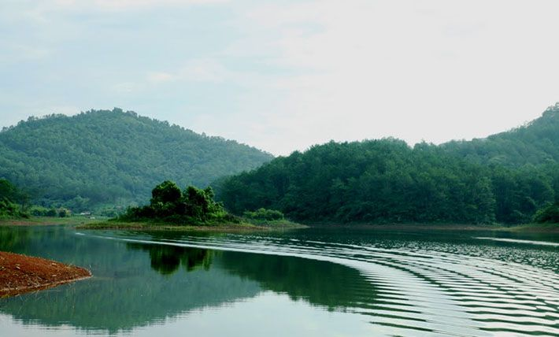
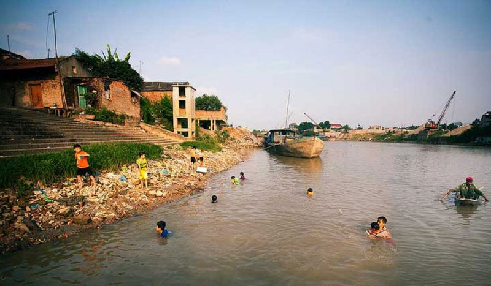
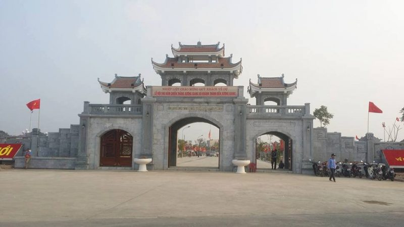
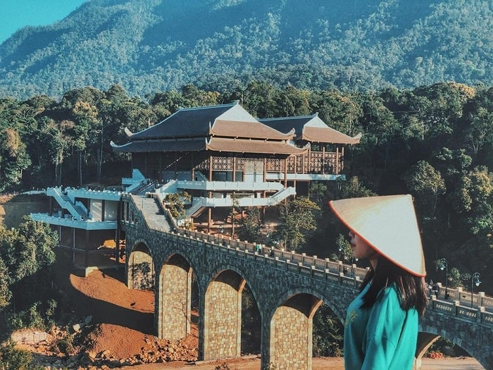
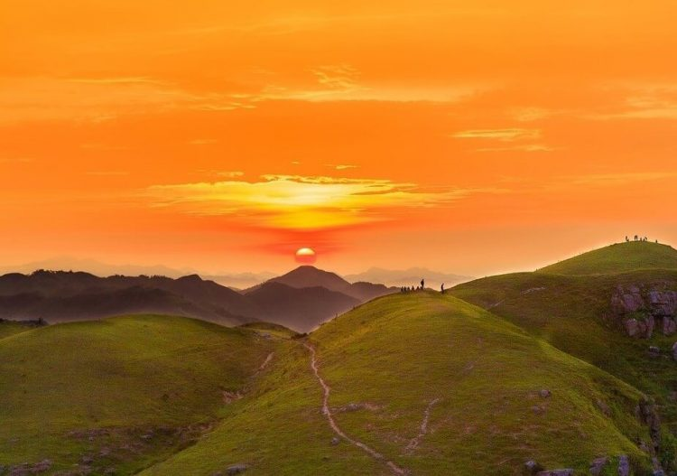
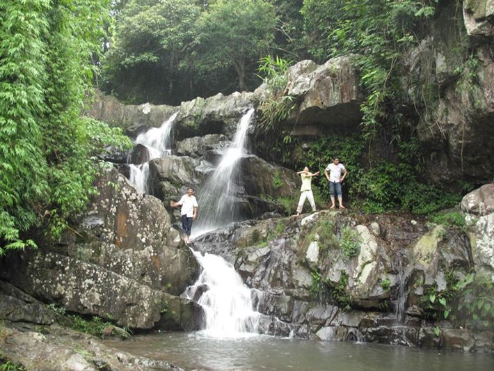
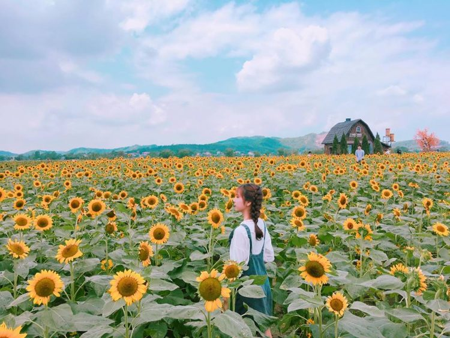
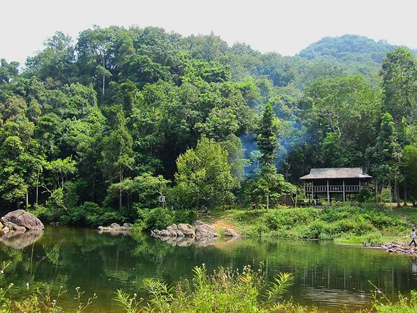

Khu Du Lịch Khuôn Thần Bắc Giang – Địa Điểm Du Lịch Thanh Bình Bắc Giang
Nằm yên ả, thanh bình và duyên dáng giữa ngút ngàn thông reo và trập trùng những dãy đồi vải thiều xanh miên man cùng khoảng trời trong xanh thoáng đạt in dấu mặt hồ trong biếc, đó là những điểm nhấn riêng có của hồ Khuôn Thần.
Địa chỉ: Lục Ngạn – Bắc Giang – Việt Nam
Giờ mở cửa: 24/24
Phí dịch vụ: Miễn phí


Làng Thổ Hà Bắc Giang – Địa Điểm Du Lịch Đặc Sản Bắc Giang
Trung tâm của làng – đình Thổ Hà tiêu biểu cho không gian tâm linh, văn hóa của người Việt với nét kiến trúc đặc trưng. Với vẻ đẹp cổ kính ở các kiến trúc cổ cùng những nghề thủ công truyền thống,Thổ Hà đang thu hút nhiều du khách trong và ngoài nước tìm đến.
Địa chỉ: Xã Vân Hà huyện Việt Yên tỉnh Bắc Giang
Giờ mở cửa: 24/24
Phí dịch vụ: Miễn phí
Thành Cổ Xương Giang Bắc Giang – Địa điểm Du Lịch Di Tích Bắc Giang
Qua bao thăng trầm của lịch sử, di tích Thành cổ Xương Giang đã chỉ còn lại một vài vết tích, song vị trí và hình hài khu Thành cổ vẫn được lưu giữ nguyên vẹn trong tâm trí của từng người con đất Bắc Giang.Sự hiện hữu của khu di tích hôm nay chính là biểu tượng sức mạnh, tinh thần và ý chí quyết thắng của dân tộc Việt Nam
Địa chỉ: Nằm ở xã Xương Giang, thành phố Bắc Giang, tỉnh Bắc Giang
Phí dịch vụ: Miễn phí


Chùa Yên Tử Bắc Giang – Địa điểm Du Lịch Kỳ Vĩ Bắc Giang
Tây Yên Tử là nơi có hệ thống các chùa tháp, di tích cùng sự kỳ vĩ của rừng, núi liên quan đến sự hình thành thiền phái Trúc Lâm Yên Tử thời Trần như Chùa Vĩnh Nghiêm (Yên Dũng), chùa Am Vãi (Lục Ngạn), Đồng Thông (Sơn Động),…
Địa chỉ: Nằm ở sườn Tây và Bắc của dãy núi Yên Tử, thuộc địa bàn tỉnh Bắc Giang
Phí dịch vụ: Miễn phí
Đồng Cao Bắc Giang – Địa điểm Du Lịch Nổi Bật Bắc Giang
Đi phượt Đồng Cao, bạn không thể bỏ lỡ 2 khoảng khắc tuyệt vời nhất nơi đây là bình minh và hoàng hôn. Trên đỉnh Đồng Cao Bắc Giang, những đồng cỏ xanh mướt tận hưởng vị sương sớm mơn mởn hòa quyện giữa không khí trong lành thoáng đãng. Đồng Cao được người dân ví von là “Mẫu Sơn của Bắc Giang”
Địa chỉ: Nằm ở vùng Đông Bắc tổ quốc, Đồng Cao Bắc Giang
Giờ mở cửa: 24/24
Phí dịch vụ: Miễn phí


Khu Di Tích Suối Mỡ Bắc Giang – Địa điểm Du Lịch Tâm Linh Bắc Giang
Hằng năm vào ngày 30 tháng 3 và mồng 1, mồng 2 tháng 4 Âm lịch nhân dân địa phương lại tổ chức Lễ hội nhằm cầu mong mùa màng được tốt tươi và cũng là dịp để mọi người tỏ lòng biết ơn với công chúa Quế Mỵ Nương. Nếu đến với Suối Mỡ vào dịp này du khách sẽ được sống trong không khí lễ hội mang đầy màu sắc truyền thống văn hoá, được tham gia các trò chơi dân gian như bơi thuyền, thi bắn Cung, Vật, Cờ bỏi, Đu, chọi Gà, Võ dân tộc…
Địa chỉ: Xã Nghĩa Phương, huyện Lục Nam, cách thành phố Bắc Giang khoảng 32km về phía Đông Bắc
Giờ mở cửa: 24/24
Phí dịch vụ: Miễn phí
Cánh Đồng Hoa Hướng Dương Bắc Giang – Địa Điểm Du Lịch Dã Ngoại Bắc Giang
Đến với vườn hoa, các bạn sẽ được đứng giữa đồi hoa hướng dương rực rỡ trong nắng, cảm nhận tâm hồn thư thái yên bình giữa “thảm hoa” trải dài ngút ngàn. Các bạn được thỏa sức “check-in”, chụp ảnh và thưởng lãm loài hoa mặt trời.
Địa chỉ: Phố Thanh Mai, phường Đa Mai, TP Bắc Giang
Phí dịch vụ: Miễn phí


Rừng Nguyên Sinh Khe Rỗ Bắc Giang – Địa điểm Du Lịch Hoang Sơ Bắc Giang
Cảnh sắc của Khe Rỗ rất hoang sơ và thú vị với những tán rừng rậm rập, những suối nước, thác nước, ghềnh đá. Đặc biệt là những hồ nước nhỏ trong xanh giữa rừng, nơi bạn có thể bơi lội hay tắm mát thỏa thích.
Du khách đến Khe Rỗ tham quan thường nghỉ đêm tại nhà sàn của kiểm lâm, những người gác rừng thân thiện và mến khách. Vào bản mua gà, ra suối câu con cá, xin nắm rau dền ở nhà dân, với một chai rượu trắng nút chuối là chủ – khách có thể khề khà tâm sự đến đêm.
Địa chỉ: Nằm trong Khu bảo tồn Tây Yên Tử, cách Hà Nội 120 km về phía Đông Bắc